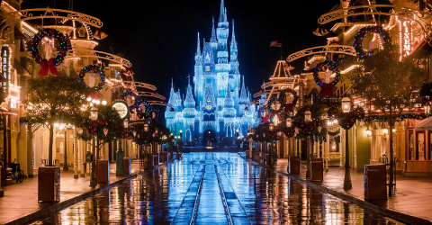
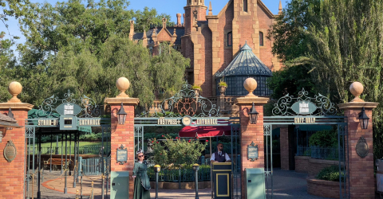
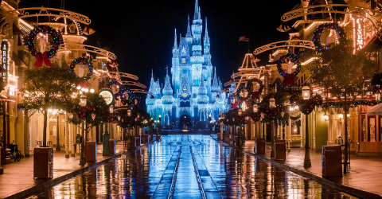
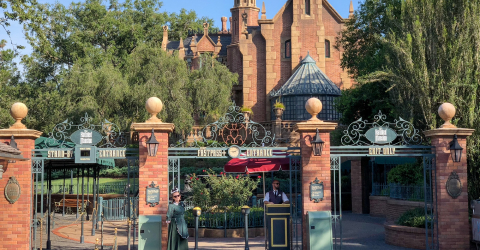
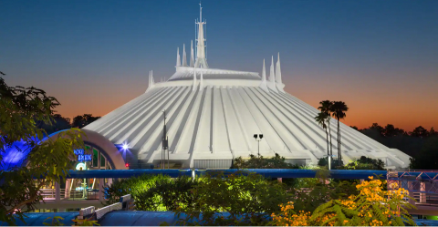
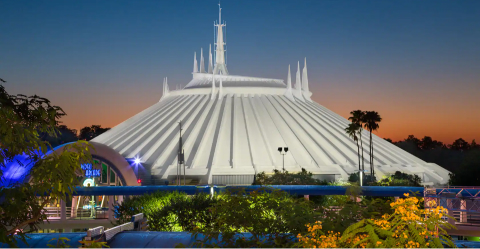

Como llegar hasta Magic Kingdom.
A diferencia del resto de los parques, a Magic Kingdom, es aconsejable ir a traves de alguno de los medios que ofrece el resort donde nos encontramos: Autobus, Barco o Monoriel.
Si estás alojado fuera de Disney, o solamente es que quieres ir en auto, Magic Kingdom es el único que no tiene el parking adyacente a la entrada del parque. Tendrás que dejar el auto en la playa del "Ticket and Transportation Center" para luego luego tomar el Monoriel o Barco hasta la entrada del parque.
Habiendo visto estas dos situaciones, queda claro que la mejor manera de ir al parque es mediante los medios de transportes propios de Disney.
Una vez que llegues a la entrada de Magic Kingdom, tendrás que pasar con el control de seguridad, para luego dirigirte al sector del "Mickey Totem" para leer nuestro ticket, o Magic Band, y huella digital y disponernos para ingresar al "happiest place on earth".
Cuanto tiempo hay que darle a Magic Kingdom.
En este punto no hay mucho debate. Siempre se recomienda que para Magic Kingdom se dediquen dos días completos.
Este parque brinda la posilidad de hacer una gran cantidad de cosas, más allá de las atracciones, y ni hablar del show diario de cierre, Disney Enchantment.
Vamos a encontrarnos con un centenar de tiendas para recorrer y mirar. Dentro de las más destacadas tenemos a Emporium en Main Street USA, Memento Mori junto a Haunted Mansion, Bonjour! Village Gift con productos de la Bella y la Bestia y la divertida Plaza del Sol Caribe Bazaar junto a Piratas del Caribe.
Dentro de la oferta gastronómica también tendremos un amplio abanico para elegir. Podemos destacar dos: Be Our Guest Restaurant, donde podremos cenar dentro del castillo de la Bestia, y Cinderella's Royal Table, el restaurante más popular, donde vamos a comer en el interior del castillo de Cenicienta, con ella como anfitriona, y con otras princesas acompañando.
Metiendonos de lleno en las atracciones, vas a poder desfrutar de algunas de las más icónicas de Disney, como Splash Mountain, Haunted Mansion, Seven Dwarfs Mine Train, Big Thunder Mountain Railroad, Sapce Mountain, Pirates of the Caribbean, y varias más!. Sumado a estas, al día de hoy, Disney sigue construyendo Tron: Lightcycle Power Run, la cual esperan su apertura para 2023.
Si hablamos de Disney Enchantment, el show con el que el parque da por terminado su día, vamos a encontrarnos con una de las cosas más espectaculares que se pueden presenciar en Disney. El show de cierre de Magic Kingdom es una combinación de increíbles fuegos artificiales, y asombrosas proyecciones de imágenes sobre el castillo de Cenicienta.
 



 
